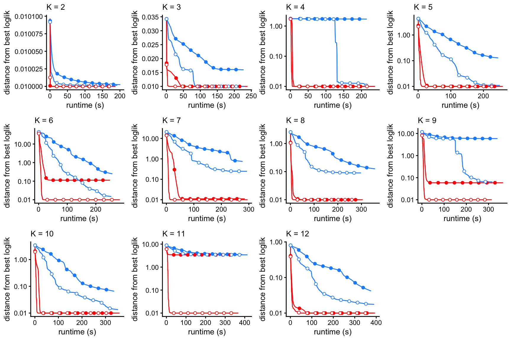
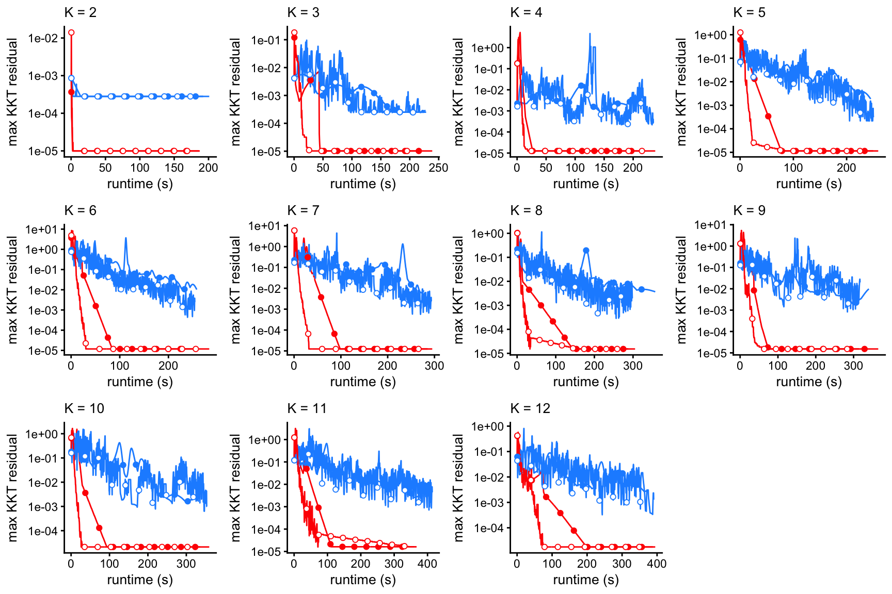

Last updated: 2025-06-23
Checks: 7 0
Knit directory:
fastTopics-experiments/analysis/
This reproducible R Markdown analysis was created with workflowr (version 1.7.1). The Checks tab describes the reproducibility checks that were applied when the results were created. The Past versions tab lists the development history.
Great! Since the R Markdown file has been committed to the Git repository, you know the exact version of the code that produced these results.
Great job! The global environment was empty. Objects defined in the global environment can affect the analysis in your R Markdown file in unknown ways. For reproduciblity it’s best to always run the code in an empty environment.
The command set.seed(1) was run prior to running the
code in the R Markdown file. Setting a seed ensures that any results
that rely on randomness, e.g. subsampling or permutations, are
reproducible.
Great job! Recording the operating system, R version, and package versions is critical for reproducibility.
Nice! There were no cached chunks for this analysis, so you can be confident that you successfully produced the results during this run.
Great job! Using relative paths to the files within your workflowr project makes it easier to run your code on other machines.
Great! You are using Git for version control. Tracking code development and connecting the code version to the results is critical for reproducibility.
The results in this page were generated with repository version 30dff04. See the Past versions tab to see a history of the changes made to the R Markdown and HTML files.
Note that you need to be careful to ensure that all relevant files for
the analysis have been committed to Git prior to generating the results
(you can use wflow_publish or
wflow_git_commit). workflowr only checks the R Markdown
file, but you know if there are other scripts or data files that it
depends on. Below is the status of the Git repository when the results
were generated:
Ignored files:
Ignored: analysis/.sos/
Ignored: data/20news-bydate/
Ignored: data/droplet.RData
Ignored: data/nips_1-17.mat
Ignored: data/pbmc_68k.RData
Ignored: output/droplet/fits-droplet.RData
Ignored: output/droplet/lda-droplet.RData
Ignored: output/newsgroups/de-newsgroups.RData
Ignored: output/newsgroups/fits-newsgroups.RData
Ignored: output/newsgroups/lda-newsgroups.RData
Ignored: output/newsgroups/rds/
Ignored: output/nips/fits-nips.RData
Ignored: output/nips/lda-nips.RData
Ignored: output/pbmc68k/rds/
Untracked files:
Untracked: analysis/lda-eb-newsgroups-em-k=10.rds
Untracked: analysis/lda-eb-newsgroups-scd-ex-k=10.rds
Untracked: analysis/lda-newsgroups-em-k=10.rds
Untracked: analysis/lda-newsgroups-scd-ex-k=10.rds
Untracked: analysis/maptpx-newsgroups-em-k=10.rds
Untracked: analysis/maptpx-newsgroups-scd-ex-k=10.rds
Untracked: data/mcf7.RData
Untracked: plots/
Note that any generated files, e.g. HTML, png, CSS, etc., are not included in this status report because it is ok for generated content to have uncommitted changes.
These are the previous versions of the repository in which changes were
made to the R Markdown (analysis/assess_fits_nips.Rmd) and
HTML (docs/assess_fits_nips.html) files. If you’ve
configured a remote Git repository (see ?wflow_git_remote),
click on the hyperlinks in the table below to view the files as they
were in that past version.
| File | Version | Author | Date | Message |
|---|---|---|---|---|
| Rmd | 30dff04 | Peter Carbonetto | 2025-06-23 | wflow_publish("index.Rmd") |
| html | 319474b | Peter Carbonetto | 2024-08-21 | Added ‘noinit’ results to elbo plots for nips data. |
| Rmd | a482257 | Peter Carbonetto | 2024-08-21 | workflowr::wflow_publish("assess_fits_nips.Rmd", verbose = TRUE) |
| html | 70d8b96 | Peter Carbonetto | 2024-07-29 | Added ELBO plots to the assess_fits_nips analysis. |
| Rmd | f14aa4d | Peter Carbonetto | 2024-07-29 | workflowr::wflow_publish("assess_fits_nips.Rmd", verbose = TRUE) |
| html | 7149b09 | Peter Carbonetto | 2021-04-09 | Slight adjustment to the scatterplot in the assess_fits_nips analysis. |
| Rmd | fc6c077 | Peter Carbonetto | 2021-04-09 | workflowr::wflow_publish("assess_fits_nips.Rmd") |
| html | 07a8f8b | Peter Carbonetto | 2021-04-09 | Made a few small improvements to the assess_fits_nips analysis. |
| Rmd | 5934cdd | Peter Carbonetto | 2021-04-09 | workflowr::wflow_publish("assess_fits_nips.Rmd") |
| html | 42d2b01 | Peter Carbonetto | 2021-04-09 | Added topic proportions scatterplot, for K=10, to assess_fits_nips |
| Rmd | da6e05b | Peter Carbonetto | 2021-04-09 | workflowr::wflow_publish("assess_fits_nips.Rmd") |
| html | b2fe08f | Peter Carbonetto | 2021-04-07 | Fixed a couple of the progress plots in the assess_fits_nips analysis. |
| Rmd | 585ad64 | Peter Carbonetto | 2021-04-07 | workflowr::wflow_publish("assess_fits_nips.Rmd") |
| html | 269a77b | Peter Carbonetto | 2021-04-07 | Improved progress plots in assess_fits_nips analysis. |
| Rmd | 424e969 | Peter Carbonetto | 2021-04-07 | workflowr::wflow_publish("assess_fits_nips.Rmd") |
| Rmd | da28232 | Peter Carbonetto | 2021-04-06 | Working on assess_fits_newsgroups analysis. |
| html | 65141ad | Peter Carbonetto | 2021-04-06 | First build of assess_fits_nips analysis. |
| Rmd | fc60f20 | Peter Carbonetto | 2021-04-06 | workflowr::wflow_publish("assess_fits_nips.Rmd") |
Here we compare the quality of the fits obtained from the different updates (EM and SCD, with and without extrapolation), and with different numbers of topics, \(K\).
Load the packages used in the analysis below, as well as some additional functions for creating the plots.
library(fastTopics)
library(ggplot2)
library(cowplot)
source("../code/plot_functions.R")Load the results of running fit_poisson_nmf on the NIPS
data, with different algorithms, and for various settings of \(K\).
load("../output/nips/fits-nips.RData")
fits <- lapply(fits,poisson2multinom)This plot shows the improvement in the log-likelihood as the rank, \(K\), is increased. The log-likelihoods are shown relative to the log-likelihood at \(K = 2\).
plot_loglik_vs_rank(fits) +
theme_cowplot(font_size = 12)
The next set of plots shows the improvement in the fit over time, for \(K\) from 2 to 12, using EM or SCD, with and without extrapolation. The quality of the fit is measured by the log-likelihood relative to the best log-likelihood that was identified among all methods compared.
prune_prefit_iters <- function (fit) {
n <- nrow(fit$progress)
fit$progress <- fit$progress[1000:n,]
return(fit)
}
create_progress_plot <- function (fits, k, y = "loglik")
plot_progress(fits,y = y,add.point.every = 100,shapes = 21,
colors = c("dodgerblue","red","dodgerblue","red"),
fills = c("dodgerblue","red","white","white")) +
scale_y_continuous(trans = "log10",breaks = 10^seq(-8,8)) +
guides(color = "none",fill = "none",size = "none",
shape = "none",linetype = "none") +
labs(x = "runtime (s)",title = paste("K =",k)) +
theme_cowplot(font_size = 10) +
theme(plot.title = element_text(size = 10,face = "plain"))
fits <- lapply(fits,prune_prefit_iters)
p <- vector("list",12)
for (i in 2:12)
p[[i]] <- create_progress_plot(fits[dat$k == i],i)
p[[2]] <- p[[2]] + scale_y_continuous()
p[[3]] <- p[[3]] + scale_y_continuous()
plot_grid(p[[2]],p[[3]],p[[4]],p[[5]],
p[[6]],p[[7]],p[[8]],p[[9]],
p[[10]],p[[11]],p[[12]],
nrow = 3,ncol = 4)
These plots shows the evolution of the KKT residuals over time.
for (i in 2:12)
p[[i]] <- create_progress_plot(fits[dat$k == i],i,y = "res")
plot_grid(p[[2]],p[[3]],p[[4]],p[[5]],
p[[6]],p[[7]],p[[8]],p[[9]],
p[[10]],p[[11]],p[[12]],
nrow = 3,ncol = 4)
For the most part, the EM and CD algorithms achieve similar estimates in this data set. For example, for \(K = 10\), the difference in the topic model likelihoods between the EM and CD estimates is very small, and indeed the estimated topic proportions are nearly identical:
fit1 <- fits[["fit-nips-em-k=10"]]
fit2 <- fits[["fit-nips-scd-k=10"]]
pdat <- data.frame(x = as.vector(fit1$L),y = as.vector(fit2$L))
p1 <- ggplot(pdat,aes(x = x,y = y)) +
geom_point(shape = 21,size = 2,color = "white",fill = "royalblue") +
geom_abline(color = "black",linetype = "dotted") +
labs(x = "EM estimate",y = "CD estimate") +
theme_cowplot(font_size = 12)
print(p1)
Finally, let’s have a look at the results of running LDA with the various initializations:
load("../output/nips/lda-nips.RData")
p <- vector("list",12)
runs <- which(dat$k == 2)
p[[1]] <- create_elbo_plot(fits[runs],dat[runs,"runtime"],2)
for (i in 2:12) {
runs <- which(dat$k == i)
p[[i]] <- create_elbo_plot(fits[runs],dat[runs,"runtime"],i) +
guides(color = "none",linetype = "none")
}
plot_grid(p[[2]],p[[3]],p[[4]],p[[5]],
p[[6]],p[[7]],p[[8]],p[[9]],
p[[10]],p[[11]],p[[12]],p[[1]],
nrow = 3,ncol = 4)
sessionInfo()
# R version 4.3.3 (2024-02-29)
# Platform: aarch64-apple-darwin20 (64-bit)
# Running under: macOS 15.5
#
# Matrix products: default
# BLAS: /Library/Frameworks/R.framework/Versions/4.3-arm64/Resources/lib/libRblas.0.dylib
# LAPACK: /Library/Frameworks/R.framework/Versions/4.3-arm64/Resources/lib/libRlapack.dylib; LAPACK version 3.11.0
#
# locale:
# [1] en_US.UTF-8/en_US.UTF-8/en_US.UTF-8/C/en_US.UTF-8/en_US.UTF-8
#
# time zone: America/Chicago
# tzcode source: internal
#
# attached base packages:
# [1] stats graphics grDevices utils datasets methods base
#
# other attached packages:
# [1] cowplot_1.1.3 ggplot2_3.5.0 fastTopics_0.7-25
#
# loaded via a namespace (and not attached):
# [1] gtable_0.3.4 xfun_0.42 bslib_0.6.1
# [4] htmlwidgets_1.6.4 ggrepel_0.9.5 lattice_0.22-5
# [7] quadprog_1.5-8 vctrs_0.6.5 tools_4.3.3
# [10] generics_0.1.3 parallel_4.3.3 tibble_3.2.1
# [13] fansi_1.0.6 highr_0.10 pkgconfig_2.0.3
# [16] Matrix_1.6-5 data.table_1.17.4 SQUAREM_2021.1
# [19] RcppParallel_5.1.10 lifecycle_1.0.4 truncnorm_1.0-9
# [22] farver_2.1.1 compiler_4.3.3 stringr_1.5.1
# [25] git2r_0.33.0 textshaping_0.3.7 progress_1.2.3
# [28] munsell_0.5.0 RhpcBLASctl_0.23-42 httpuv_1.6.14
# [31] htmltools_0.5.8.1 sass_0.4.9 yaml_2.3.8
# [34] lazyeval_0.2.2 plotly_4.10.4 crayon_1.5.2
# [37] later_1.3.2 pillar_1.9.0 jquerylib_0.1.4
# [40] whisker_0.4.1 tidyr_1.3.1 uwot_0.2.3
# [43] cachem_1.0.8 gtools_3.9.5 tidyselect_1.2.1
# [46] digest_0.6.34 Rtsne_0.17 stringi_1.8.3
# [49] reshape2_1.4.4 dplyr_1.1.4 purrr_1.0.2
# [52] ashr_2.2-66 labeling_0.4.3 rprojroot_2.0.4
# [55] fastmap_1.1.1 grid_4.3.3 colorspace_2.1-0
# [58] cli_3.6.4 invgamma_1.1 magrittr_2.0.3
# [61] utf8_1.2.4 withr_3.0.2 prettyunits_1.2.0
# [64] scales_1.3.0 promises_1.2.1 rmarkdown_2.26
# [67] httr_1.4.7 workflowr_1.7.1 ragg_1.2.7
# [70] hms_1.1.3 pbapply_1.7-2 evaluate_1.0.3
# [73] knitr_1.45 viridisLite_0.4.2 irlba_2.3.5.1
# [76] rlang_1.1.5 Rcpp_1.0.12 mixsqp_0.3-54
# [79] glue_1.8.0 jsonlite_1.8.8 plyr_1.8.9
# [82] R6_2.5.1 systemfonts_1.0.6 fs_1.6.5